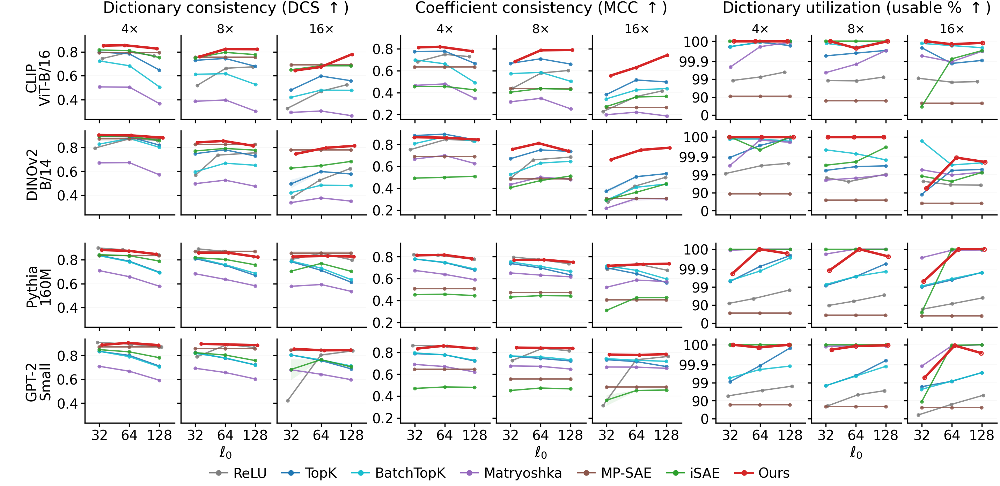
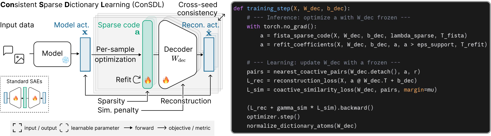
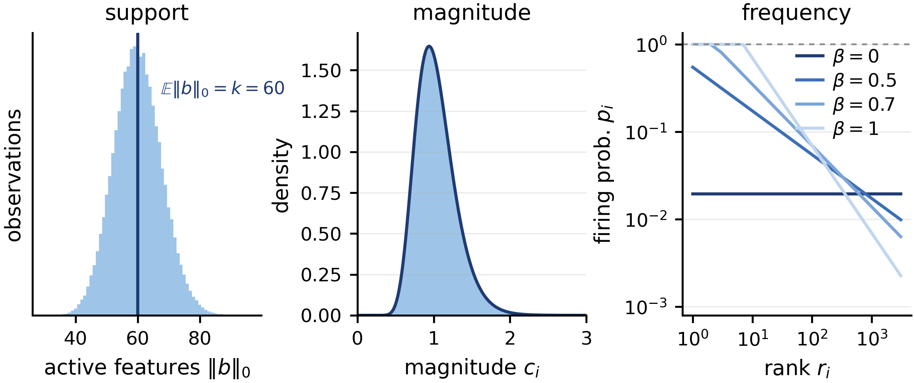
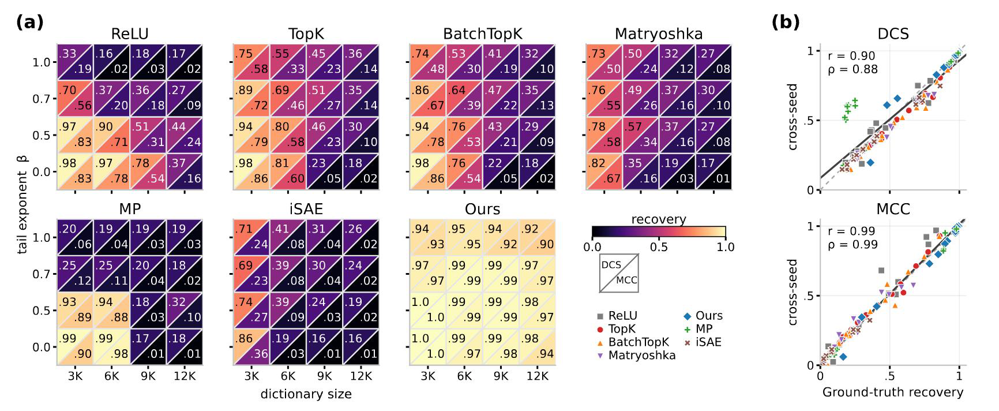
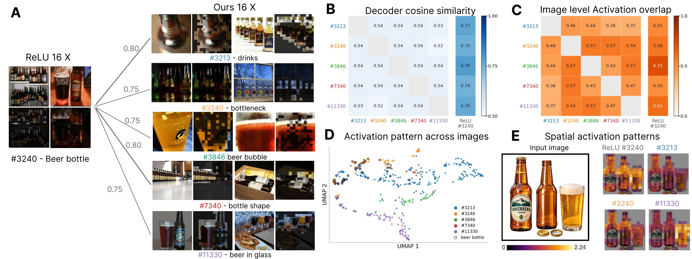
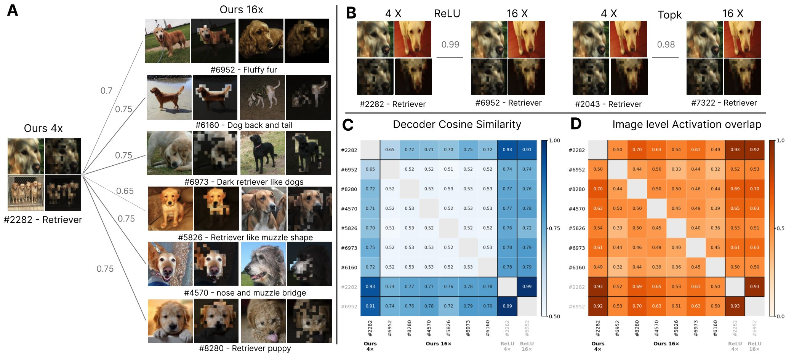
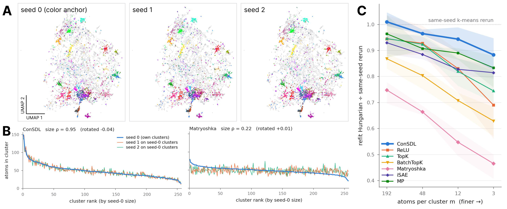
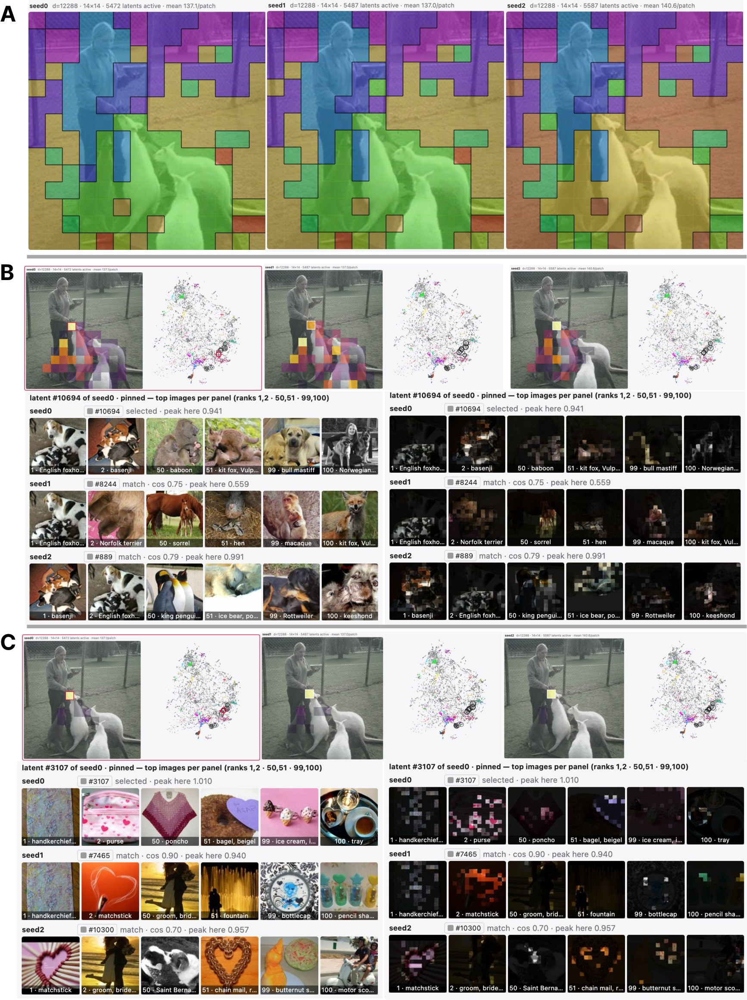

Beyond SAEs: Consistent Concept Discovery with Sparse Coding
Sparse autoencoders trained on the same activations can produce different dictionaries and coefficients across random seeds. We propose Consistent Sparse Dictionary Learning (ConSDL), which replaces the learned encoder with per-sample sparse coding to improve the consistency of both dictionaries and coefficients across training runs.
relative gain over baseline average
relative gain over baseline average
near-perfect dictionary and coefficient recovery
CLIP · DINOv2 · GPT-2 · Pythia
Consistency gains are averaged across four backbones relative to six SAE baselines, with nine dictionary-width and sparsity settings per backbone.

Method
ConSDL replaces the learned encoder with per-sample sparse coding, alternating between coefficient inference and dictionary updates. Coefficient refitting and co-active similarity regularization stabilize dictionary learning by correcting shrinkage bias from the sparsity penalty and reducing redundancy among co-active atoms.

Per-sample sparse coding
For each model activation, FISTA iteratively optimizes nonnegative sparse coefficients under the current dictionary. Each iteration takes a gradient step on the reconstruction term, followed by nonnegative soft thresholding for the ℓ₁ penalty.
Coefficient refitting
The ℓ₁ penalty promotes sparsity but also shrinks nonzero coefficients, potentially underestimating selected atoms’ contributions during dictionary updates. ConSDL refits their magnitudes on the support selected by FISTA without this penalty, while retaining nonnegativity.
Co-active similarity regularization
Although sparse coding improves coefficient estimation, atoms can still converge to similar directions during dictionary learning. ConSDL reduces this redundancy by penalizing high cosine similarity between each active atom and its most similar atom active for the same input.
Why refitting and regularization matter
Removing either coefficient refitting or co-active similarity regularization makes dictionary learning less stable. At 16× expansion and matched sparsity (ℓ₀ ≈ 128), refitting raises reconstruction R² from 0.87 to 0.92 on CLIP and eliminates the dead atoms observed with sparse coding alone on Pythia-160M. However, refitting alone still leaves thousands of duplicate atoms on both backbones. Adding similarity regularization reduces these duplicates to nearly zero, yielding high consistency with a fully usable dictionary.
Recovering ground-truth dictionaries and coefficients
We test whether ConSDL improves dictionary and coefficient recovery over SAE baselines as dictionary size and frequency imbalance increase. We generate 768-dimensional synthetic data with an expected 60 active atoms per sample and log-normal nonzero coefficients. Across 16 settings, dictionary sizes range from 3,072 to 12,288 atoms and Zipf exponents from β = 0 (uniform selection) to β = 1 (strong frequency imbalance).

SAE recovery is generally strong for smaller dictionaries and more balanced activation frequencies, but declines as the settings become more challenging. ConSDL achieves near-perfect dictionary and coefficient recovery across all 16 settings.

Results on vision and language models
We train ConSDL and six SAE baselines on penultimate-layer activations from CLIP ViT-B/16 and DINOv2-B/14 using ImageNet, and on layer-9 activations from GPT-2 Small and Pythia-160M using 500M FineWeb tokens. We evaluate cross-seed consistency at dictionary expansions of 4×, 8×, and 16× and sparsity levels ℓ₀ ≈ 32, 64, and 128, with three training seeds per configuration.
Dictionary consistency (DCS) measures the mean decoder cosine similarity after Hungarian matching. Coefficient consistency (MCC) measures the mean coefficient correlation under the same matching. Cross-seed scores are averaged over all seed pairs. The usable atom fraction measures how much of the dictionary is neither dead nor duplicated.
ConSDL achieves the highest average DCS and MCC across the four backbones. MP-SAE has comparable average dictionary consistency but substantially lower coefficient consistency. ConSDL improves both metrics while maintaining high dictionary utilization.
Analysis
Finer-grained concepts
On CLIP ViT-B/16 (16×, ℓ0 ≈ 128), ConSDL learns about 9K consistent atoms (cross-seed cosine > 0.7), compared with 4K for ReLU. Where ReLU learns one broad atom, ConSDL often learns several matched atoms that each capture a more specific feature.

Larger dictionaries, more detailed concepts
Going from 4× to 16× expansion, a broad ConSDL atom splits into several more specific atoms, while ReLU and TopK keep nearly the same broad atom. Across all four backbones, consistent ConSDL atoms at 4× more often have multiple counterparts at 16× than ReLU or TopK atoms.

Consistency beyond individual atoms
We examine whether atom-level consistency extends to the overall structure of the dictionary. For CLIP ViT-B/16, we cluster atoms based on similarity between decoder directions and compare cluster sizes and centroids across training runs.

Consistent activation patterns
Qualitative examples in CLIP and Pythia-160M show how matched atoms activate across training runs. In CLIP, matched atoms highlight similar image regions and retrieve similar visual examples. In Pythia, matched atoms highlight similar tokens and contexts, including animal nouns and sentence-final punctuation.

Interactive Demo
Explore how matched dictionary atoms activate across training seeds and methods.
BibTeX
@misc{consdl2026,
title = {Beyond SAEs: Consistent Concept Discovery with Sparse Coding},
author = {Choi, Jinho and Lim, Hyesu and Choo, Jaegul and Schneider, Steffen},
year = {2026}
}